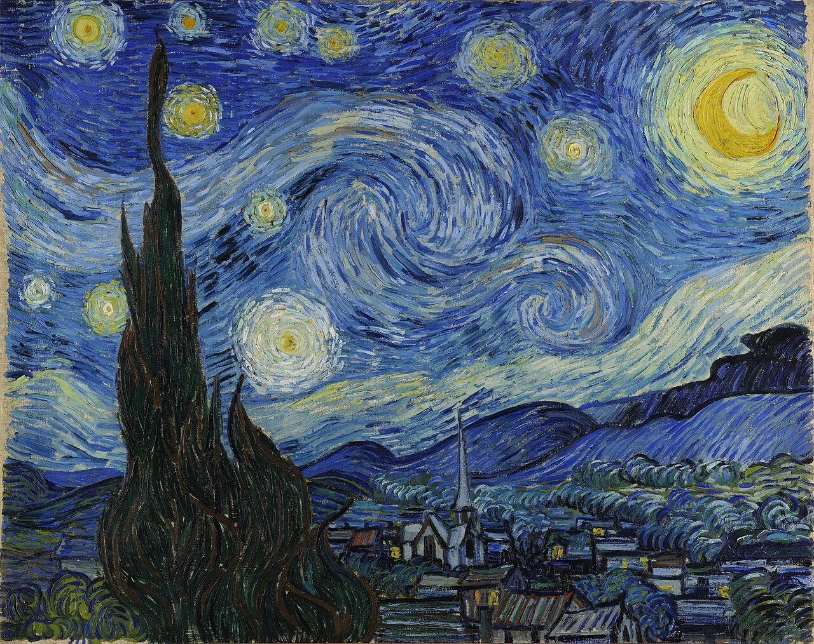

《星月夜》は、①空を走る筆の方向、②左端の黒い糸杉、③下に広がる静かな村の三つを見る。上と下、動と静、明るい星と暗い形を比べると、ただ「うねる夜空」の絵ではなくなります。
《星月夜》は、知っている画像の印象がとても強い作品です。「ぐるぐるした空」「ゴッホらしい筆」で分かった気になりやすい。でも画面を上と下に分けると、空は激しく動くのに、村はかなり静かです。その二つの間を、左の黒い糸杉が縦に突き抜ける。空だけではなく三つの大きな部分として見ると、構図が急に分かりやすくなります。

1. まず空を「星の背景」ではなく主役として見る
MoMAの作品解説でも、夜空が画面の大部分を占めることが強調されています。実際に画面を見ると、空は単なる背景ではなく、村よりはるかに大きな面積を使っています。
最初は星を数えるより、青い空全体の動きを一つの形として見ます。水平に静かに広がる空ではなく、波のような曲線が何本も重なり、画面の中央を横切ります。「夜空なのに落ち着かない」という第一印象をそのまま入口にします。
2. 空を「何色？」ではなく「どちらへ動く？」で見る
ゴッホを見るときは、筆触を線のように追うと分かりやすいです。左から右へ流れる部分、円を描く部分、短く刻む部分。空全体が同じ方向に塗られているわけではありません。
指でなぞらず、目だけで一本の青い筆跡を追ってみます。その隣へ移ると、筆の方向が連続して大きな渦を作る場所があります。近くでは短い筆触、離れると巨大な空気の流れ。その切り替わりがゴッホらしいところです。
3. 星は小さな点ではなく、周囲の輪まで見る
星や月の周りには、白や黄の明るい部分だけでなく、その外側に円形の光が広がります。光源そのものより、周囲へどこまで明るさがにじむかを見ます。
青い空の中に黄色や白が置かれることで、補色に近い強い対比が生まれます。一つの星を選び、中心→外側の輪→青い空へと視線を広げると、光が点ではなく面として見えてきます。
4. 左の糸杉は、空と地上を縦につなぐ
左端の黒い糸杉は、画面下から上へ大きく伸び、夜空へ食い込んでいます。空の横方向の流れに対して、糸杉は強い縦方向です。まずシルエットだけを見ると、炎のようにも見えます。
糸杉がなければ、上の空と下の村はもっと別々に見えるかもしれません。黒い大きな形が両者をつなぎ、同時に明るい星空をさらに明るく見せています。「木だから見る」のではなく、構図を支える黒い縦線として見ると役割が分かります。
5. 空から村へ目を下ろすと、驚くほど静か
下の村には家々が並び、教会の尖塔が立っていますが、空ほど激しい動きはありません。屋根や建物は比較的落ち着いた形で並びます。上の空と下の地上のテンポが違います。
空をしばらく見たあと村だけを見ると、眠っているような静けさが強く感じられます。そこからもう一度空へ戻ると、激しさがさらに増す。作品の中を上下に往復することで、対比を自分の目で作れます。
6. 「見たままの夜景」と思わず、組み立てられた景色を見る
《星月夜》は、ゴッホがサン＝レミで療養していた1889年に制作されました。ただし、画面を窓から見えた景色の正確な記録としてだけ見ると、作品の面白さが狭くなります。村や空、糸杉は、画面の中で強い構成を作るように組み合わされています。
「実際に星はいくつあった？」より、「なぜ空をこれほど大きくした？」「なぜ糸杉を左に置いた？」と考える方が、目の前の作品に戻れます。現実の再現と画面の作り方の差を楽しみます。
7. MoMAで実物を見るなら、近くと遠くを必ず往復する
実物では、画像より筆触の密度と画面の大きさを身体で感じられます。まず少し離れて、空・糸杉・村の三つを一度に見る。その後近づき、空の筆の跡や星の周囲を見る。最後にまた離れます。
上の空と下の村の比率を見る。
一本の青い線を追う。
縦方向の強さを確認。
短い筆跡が大きな渦に戻る。
有名な「渦」を確認して終わるのではなく、その渦と対照になる静かな場所まで見る。そこまで行くと、自分で見た《星月夜》になります。
空だけで終わらない。空→糸杉→静かな村。
参考：The Museum of Modern Art｜Vincent van Gogh, The Starry Night